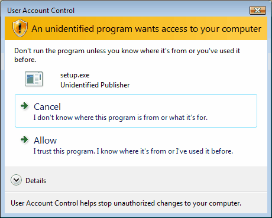
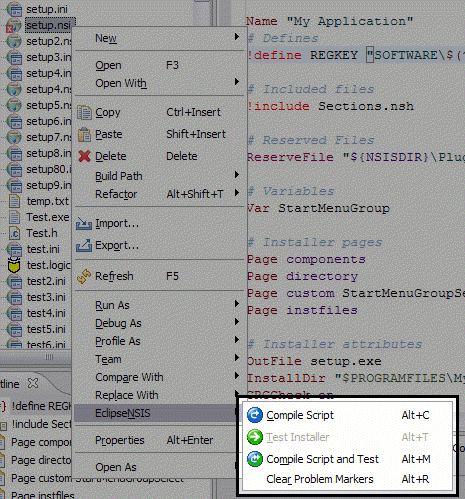
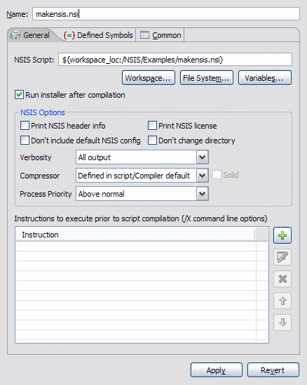
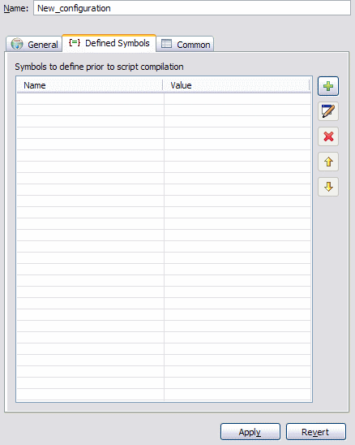
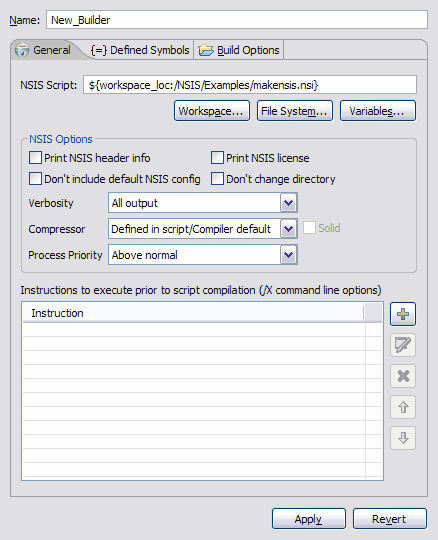
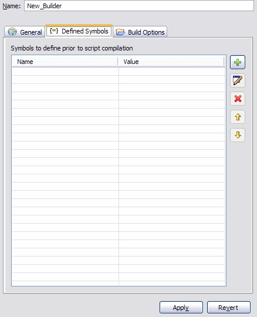
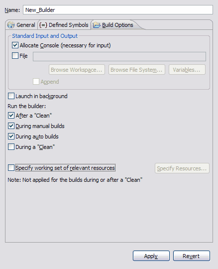

Compiling & Testing
EclipseNSIS includes integrated support for compiling NSIS scripts as well as for testing the installers created after compilation. Errors and warnings encountered during compilation are logged in the EclipseNSIS console and markers are added to the NSIS script file indicating the nature and location of these errors and warnings. These markers can be viewed either as annotations in the EclipseNSIS editor vertical and overview rulers or as line items in the Eclipse Workbench Problems view. EclipseNSIS persistently remembers script compilation and installer status, i.e., the status is remembered even between Eclipse Workbench sessions.
EclipseNSIS provides three options for compiling and testing NSIS scripts:
Note: Users with Windows Vista or later operating systems may see the a dialog similar to the following when testing scripts:

This can be avoided by using the RequestExecutionLevel user attribute in the NSIS script (available in NSIS 2.26 and higher).
Direct Compile and Test
There are two ways to directly compile/or and test an NSIS script in EclipseNSIS:
- Using the Compile Script or Compile Script and Test menu items or buttons in the EclipseNSIS editor menu or toolbar, respectively.
- Right clicking on an NSIS script in any view that shows a list of Workspace resources (e.g., resource navigator, JDT package explorer, etc.) and selecting the EclipseNSIS menu.

If an NSIS script is successfully compiled in EclipseNSIS, i.e., there are no errors encountered during compilation, the installer file generated can be tested using the Test Installer menu item or toolbar button. This menu item will stay enabled as long as:
- The NSIS script is not modified after the installer was generated.
- The installer still exists on the filesystem.
- The installer is not altered manually after successful script compilation.
These menu items/toolbar buttons are normally disabled when editing an NSIS header file (*.nsh) unless it is associated with a valid NSIS script, in which case the associated NSIS script will be used for compiling and/or testing.
Launch Configurations
A launch configuration is used to store a set of NSIS options for compiling a specific NSIS script. These options override any options set in the EclipseNSIS preferences or properties dialogs. Thus, multiple NSIS option sets can be stored for a script in the form of run configurations. Running a launch configuration compiles the NSIS script and optionally executes the generated installer. EclipseNSIS launch configurations reside with the External Tools launch group. Launch configurations can be run at any time using the Run→External Tools menu or the External Tools toolbar button.
Creating a Launch Configuration
The quick way to create a launch configuration is to right-click either in the EclipseNSIS editor or on an NSIS script file in in any view that shows a list of Workspace resources (e.g., resource navigator, JDT package explorer, etc.) and choosing the Run As→NSIS Script menu item. This automatically creates a launch configuration for the selected NSIS script with default options and then runs it.
A launch configuration can also be created or updated using the Eclipse Launch Configuration dialog.
- Open the Eclipse Run→External Tools→External Tools... menu item.
- Selecting the NSIS Script configuration type and click the New... button.
- This will create a new configuration with default options.
An NSIS Script launch configuration provides three tabs for customization:
General
The General tab is used to specify NSIS options for compiling the specified NSIS script. The major portion of the General tab is identical in behavior to the EclipseNSIS Preferences Page.

- NSIS Script
- Specify the NSIS script for this run configuration. The NSIS script may be selected by browsing the workspace or the filesystem or by specifying a combination of Eclipse variables.
- Run Installer after Compilation
- Selecting this option will run the generated installer executable if the NSIS script compiles without any errors.
Defined Symbols
The Defined Symbols tab is identical in behavior to the EclipseNSIS Preferences Page.

Common
The Common tab manages the saving of the run configuration as well as collecting common preferences.

- Save As
- Specify save location of run configuration. By default it is stored internally by Eclipse in the Debug plugin metadata area. Alternately, a shared location can be chosen where the run configuration will be stored as a .launch file. This is useful in cases where the run configuration needs to be shared with other users or checked into a source code repository.
- Display in Favorites Menu
- Selecting this option will display the current configuration in the Run favorites menu.
- Console Encoding
- By default console output is shown using the default encoding (charset) for the platform. This setting can be used to specify an alternate encoding for the output of this run configuration.
- Standard Input and Output
- Specify how any output is captured, when generated by launching the run configuration. The output can be captured by the EclipseNSIS console or by an output file. Please note that the EclipseNSIS console does NOT accept input.
- Launch in Background
- Specify whether the run configuration will be launched in the foreground or background (default).
Project Builders
Similar to a launch configuration, a project builder configuration is used to store a set of NSIS options for compiling a specific NSIS script. The project builder will be invoked by the Eclipse workbench based upon rules specified in the configuration. Upon execution, a project builder configuration compiles the specified NSIS script.
Creating a Project Builder Configuration
To create a project builder configuration, perform the following steps:
- Select the desired project.
- From its pop-up menu choose Properties.
- Click New... to create a new configuration or Import... to import an existing launch configuration as a builder.
- If creating a new configuration, select NSIS Script in the resulting dialog.
An NSIS Script project builder configuration provides three main tabs for customization:
General
The General tab is used to specify NSIS options for compiling the specified NSIS script. The major portion of the General tab is identical in behavior to the EclipseNSIS Preferences Page.

- NSIS Script
- Specify the NSIS script for this run configuration. The NSIS script may be specified by browsing the workspace or the filesystem or by specifying a combination of Eclipse variables.
Defined Symbols
The Defined Symbols tab is identical in behavior to the EclipseNSIS Preferences Page.

Build Options
The Build Options tab is used to specify when the project builder should be run.

- Standard Input and Output
- Specify how any output is captured, when generated by launching the run configuration. The output can be captured by the EclipseNSIS console or by an output file. Please note that the EclipseNSIS console does NOT accept input.
- Launch in Background
- Specify whether the project builder configuration will be launched in the foreground (default) or background.
- Run the Builder
- Specify when the project builder is executed. By default, this is set to After a "Clean" and During Manual Builds. Running the project builder during auto builds is possible, though not recommended because of performance concerns.
- Relevant Resources
- Specify a working set of resources whose changes which will trigger this project builder execution.
Previous | Contents | Next
Copyright © 2004-2010 Sunil Kamath (IcemanK).